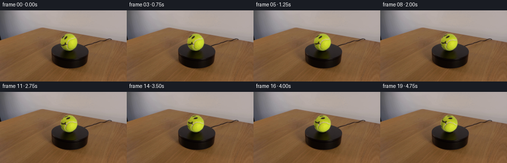
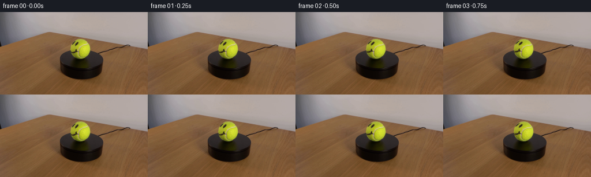
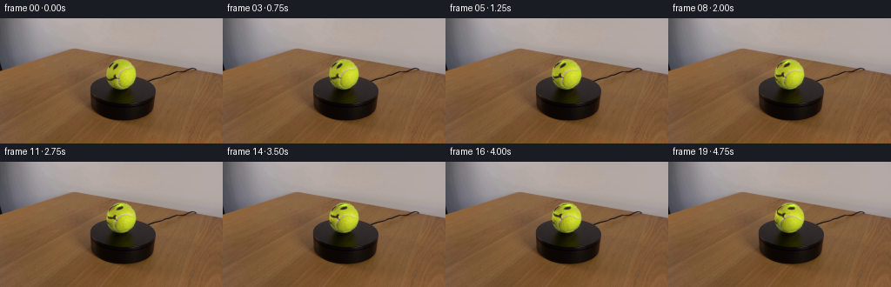
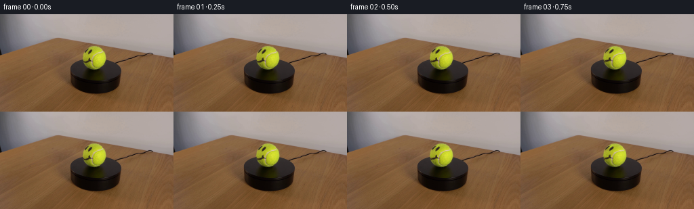

CODING AGENTS AS PIXEL WORLD MODELS
traex/GPT-5.6-Sol · 0168
点击播放 · 原生 RGB 像素
逐轮保存的候选
回放视频、检查图与代码变化。
每份候选均可单独播放。实际图片检查记录在下方工具轨迹中。
候选 01播放与检查图
点击播放 · 原生 RGB 像素


展开代码变化
--- 上一保存版本
+++ 本次保存版本
@@ -0,0 +1,77 @@
+from pathlib import Path
+
+import cv2
+import numpy as np
+from PIL import Image
+
+import artifact_io
+
+
+CASE_DIR = Path(__file__).resolve().parent
+FRAME_COUNT = 20
+
+
+def locate_ball(rgb: np.ndarray) -> tuple[float, float, float]:
+ """Locate the connected yellow tennis-ball region in the supplied frame."""
+ hsv = cv2.cvtColor(rgb, cv2.COLOR_RGB2HSV)
+ yellow = cv2.inRange(hsv, (20, 50, 60), (45, 255, 255))
+ count, _, stats, _ = cv2.connectedComponentsWithStats(yellow)
+ candidates = []
+ for i in range(1, count):
+ x, y, w, h, area = stats[i]
+ # The ball is compact; this excludes the warm, extended backdrop.
+ if area > 100 and 0.65 < w / max(h, 1) < 1.45:
+ candidates.append((area, x, y, w, h))
+ if not candidates:
+ raise RuntimeError("Unable to locate the yellow tennis ball")
+ _, x, y, w, h = max(candidates)
+ cx = x + (w - 1) / 2.0
+ cy = y + (h - 1) / 2.0
+ radius = (w + h) / 4.0
+ return cx, cy, radius
+
+
+def make_frames(first: np.ndarray) -> np.ndarray:
+ h, w = first.shape[:2]
+ cx, cy, radius = locate_ball(first)
+
+ yy, xx = np.mgrid[:h, :w].astype(np.float32)
+ distance = np.hypot(xx - cx, yy - cy)
+
+ # Keep the circular silhouette and its contact with the stand fixed. The
+ # broad one-pixel transition also prevents rotating nearby stand pixels
+ # into the ball at its antialiased edge.
+ inner = radius - 2.0
+ outer = radius - 0.35
+ u = np.clip((outer - distance) / (outer - inner), 0.0, 1.0)
+ alpha = u * u * (3.0 - 2.0 * u) # smoothstep feather
+ alpha = alpha[..., None].astype(np.float32)
+
+ frames = np.empty((FRAME_COUNT, h, w, 3), dtype=np.uint8)
+ frames[0] = first # Contract: byte-for-byte identical first frame.
+
+ degrees_per_frame = 2.5 # 10 degrees/second: visibly but slowly rotating.
+ base = first.astype(np.float32)
+ for index in range(1, FRAME_COUNT):
+ # OpenCV's negative image angle is clockwise on screen.
+ matrix = cv2.getRotationMatrix2D((cx, cy), -degrees_per_frame * index, 1.0)
+ turned = cv2.warpAffine(
+ first,
+ matrix,
+ (w, h),
+ flags=cv2.INTER_CUBIC,
+ borderMode=cv2.BORDER_REFLECT_101,
+ ).astype(np.float32)
+ composed = base + alpha * (turned - base)
+ frames[index] = np.clip(np.rint(composed), 0, 255).astype(np.uint8)
+ return frames
+
+
+def main() -> None:
+ first = np.asarray(Image.open(CASE_DIR / "first_frame.png").convert("RGB"), dtype=np.uint8)
+ frames = make_frames(first)
+ artifact_io.save(frames, CASE_DIR)
+
+
+if __name__ == "__main__":
+ main()
候选 02播放与检查图
点击播放 · 原生 RGB 像素


展开代码变化
--- 上一保存版本
+++ 本次保存版本
@@ -41,8 +41,8 @@
# Keep the circular silhouette and its contact with the stand fixed. The
# broad one-pixel transition also prevents rotating nearby stand pixels
# into the ball at its antialiased edge.
- inner = radius - 2.0
- outer = radius - 0.35
+ inner = radius - 2.4
+ outer = radius - 1.0
u = np.clip((outer - distance) / (outer - inner), 0.0, 1.0)
alpha = u * u * (3.0 - 2.0 * u) # smoothstep feather
alpha = alpha[..., None].astype(np.float32)
@@ -51,18 +51,28 @@
frames[0] = first # Contract: byte-for-byte identical first frame.
degrees_per_frame = 2.5 # 10 degrees/second: visibly but slowly rotating.
- base = first.astype(np.float32)
+ source = first.astype(np.float32)
+
+ # Separate illumination (broad, smooth color changes) from surface detail.
+ # Rotating a plain crop would incorrectly make the bright studio highlight
+ # revolve around the sphere. A multiplicative/log reflectance layer keeps
+ # the highlight and spherical shading locked in world space while moving
+ # the dark smiley ink and fine felt variation with the ball.
+ illumination = cv2.medianBlur(first, 11).astype(np.float32)
+ log_illumination = np.log(illumination + 5.0)
+ reflectance = np.log(source + 5.0) - log_illumination
for index in range(1, FRAME_COUNT):
# OpenCV's negative image angle is clockwise on screen.
matrix = cv2.getRotationMatrix2D((cx, cy), -degrees_per_frame * index, 1.0)
- turned = cv2.warpAffine(
- first,
+ turned_reflectance = cv2.warpAffine(
+ reflectance,
matrix,
(w, h),
flags=cv2.INTER_CUBIC,
borderMode=cv2.BORDER_REFLECT_101,
- ).astype(np.float32)
- composed = base + alpha * (turned - base)
+ )
+ turned = np.exp(log_illumination + turned_reflectance) - 5.0
+ composed = source + alpha * (turned - source)
frames[index] = np.clip(np.rint(composed), 0, 255).astype(np.uint8)
return frames
可观测工具轨迹
实际执行的命令与返回图片。
命令 1exit 0
/bin/bash -lc "cat GENERATION_RULES.md && printf '\\n--- PROMPT ---\\n' && cat prompt.txt"
命令 2exit 0
/bin/bash -lc "find . -maxdepth 2 -type f -printf '%p\\n' | sort && printf '\\n--- tools ---\\n' && command -v ffmpeg || true && command -v python3 || true"
命令 3exit 0
/bin/bash -lc "python3 - <<'PY'
from PIL import Image
im=Image.open('first_frame.png')
print(im.mode, im.size)
print(im.getextrema())
PY"命令 4exit 0
/bin/bash -lc "sed -n '1,240p' artifact_io.py"
命令 5exit 0
/bin/bash -lc "python3 - <<'PY' mods=['cv2','numpy','scipy','skimage','PIL'] for m in mods: try: x=__import__(m); print(m,'OK',getattr(x,'__version__','')) except Exception as e: print(m,'NO',e) PY"
命令 6exit 0
/bin/bash -lc "python3 - <<'PY'
from PIL import Image
import numpy as np
im=np.array(Image.open('first_frame.png'))
# print block averaged brightness/saturation, 4x4 blocks -> 64x36 using chars
x=im.astype(float)/255
mx=x.max(2); mn=x.min(2); sat=(mx-mn)/(mx+1e-6); val=mx
for name,a,chars in [('brightness',val,' .:-=+*#%@'),('yellow',(im[:,:,0].astype(int)+im[:,:,1]-im[:,:,2]*2),' .:-=+*#%@')]:
print('\\n',name)
if name=='yellow':
a=np.clip((a+300)/700,0,1)
for yy in range(0,144,4):
print(''.join(chars[min(len(chars)-1,int(a[yy:yy+4,xx:xx+4].mean()*(len(chars)-1)))] for xx in range(0,256,4)))
PY"命令 7exit 0
/bin/bash -lc "python3 - <<'PY'
import cv2, numpy as np
from PIL import Image
im=cv2.imread('first_frame.png')
# hough on gray various
for p2 in [10,15,20,25,30]:
c=cv2.HoughCircles(cv2.cvtColor(im,cv2.COLOR_BGR2GRAY),cv2.HOUGH_GRADIENT,dp=1,minDist=20,param1=60,param2=p2,minRadius=12,maxRadius=40)
print(p2, None if c is None else np.round(c[0],1).tolist())
# clusters LAB k means
rgb=np.array(Image.open('first_frame.png'))
X=rgb.reshape(-1,3).astype(np.float32)
for k in [6,10]:
_,lab,cen=cv2.kmeans(X,k,None,(cv2.TERM_CRITERIA_EPS+cv2.TERM_CRITERIA_MAX_ITER,100,.2),10,cv2.KMEANS_PP_CENTERS)
cnt=np.bincount(lab.ravel(),minlength=k)
o=np.argsort(-cnt)
print('k',k,[(int(cnt[i]),np.round(cen[i]).astype(int).tolist()) for i in o])
# pixels around object full resolution every 4 px x100-180 y40-130 as RGB encoded rough hue chars
# classes: Y if R,G high B low; K dark; W gray bright; C cyan etc
for y in range(40,132,3):
s=''
for x in range(90,201,3):
r,g,b=rgb[y:y+3,x:x+3].mean((0,1)); mx=max(r,g,b)
if mx<35: ch='K'
elif mx<70: ch='k'
elif r>g*1.25 and r>b*1.5:ch='R'
elif g>r*1.15 and g>b*1.2:ch='G'
elif b>r*1.3 and b>g*1.15:ch='B'
elif r+g>2*b*1.35 and r>80 and g>80:ch='Y'
elif mx>180 and max(r,g,b)-min(r,g,b)<25: ch='W'
elif mx>120: ch='+'
else:ch='.'
s+=ch
print(f'{y:3}',s)
PY"命令 8exit 0
/bin/bash -lc "python3 - <<'PY'
from PIL import Image
import numpy as np
A=np.array(Image.open('first_frame.png')).astype(int)
for y in range(42,86):
s=''
for x in range(112,165):
r,g,b=A[y,x]; mx=max(r,g,b); mn=min(r,g,b)
# yellow confidence over local brown bg: green high vs blue and r around g
q=min(r,g)-b
if mx<25: c='@'
elif mx<45:c='#'
elif mx<70:c='k'
elif q>90 and g>130:c='Y'
elif q>60 and g>110:c='y'
elif q>35 and g>100:c='o'
elif mx-mn<15 and mx>180:c='W'
elif mx>180:c='+'
elif mx>130:c='-'
elif mx>90:c='.'
else:c=','
s+=c
print(f'{y:3} {s}')
PY"命令 9exit 0
/bin/bash -lc "python3 - <<'PY'
import cv2, numpy as np
from PIL import Image
im=np.array(Image.open('first_frame.png'))
hsv=cv2.cvtColor(im,cv2.COLOR_RGB2HSV)
for lo in [(15,40,40),(20,50,60),(20,80,80),(25,60,60),(25,80,80)]:
mask=cv2.inRange(hsv,np.array(lo),np.array((45,255,255)))
n,l,st,c=cv2.connectedComponentsWithStats(mask)
comps=sorted([(st[i,4],st[i,:4].tolist(),np.round(c[i],2).tolist()) for i in range(1,n)],reverse=True)[:10]
print(lo,comps)
# pixel HSV/color samples around estimated circle center 139,64 based polar boundaries
for y,x in [(46,139),(47,139),(48,130),(48,145),(64,121),(64,122),(64,157),(64,160),(80,139),(81,139),(64,139),(52,127),(68,128),(75,145)]: print((x,y),im[y,x],hsv[y,x])
PY"命令 10exit 0
/bin/bash -lc "python3 - <<'PY'
from PIL import Image
import cv2,numpy as np
im=np.array(Image.open('first_frame.png')); hsv=cv2.cvtColor(im,cv2.COLOR_RGB2HSV)
cx,cy=139.2,64.1
for y in range(47,82):
s=''
for x in range(122,157):
rr=((x-cx)**2+(y-cy)**2)**.5
if rr>17.8: s+=' ';continue
h,ss,v=hsv[y,x]
# normalized luminance relative yellow expected. chars by V, plus hue
if v<35:c='@'
elif v<60:c='#'
elif v<90:c='K'
elif v<115:c='k'
elif v<140:c='.'
elif v<165:c='o'
elif v<190:c='O'
elif v<215:c='Y'
else:c='W'
s+=c
print(f'{y:2} {s}')
print('dark within r15:')
for y in range(49,80):
p=[]
for x in range(124,155):
if (x-cx)**2+(y-cy)**2<15**2 and hsv[y,x,2]<100:p.append(x)
if p: print(y,min(p),max(p),p)
PY"命令 11exit 0
/bin/bash -lc "python3 - <<'PY'
import cv2, numpy as np
from PIL import Image
im=np.array(Image.open('first_frame.png')); hsv=cv2.cvtColor(im,cv2.COLOR_RGB2HSV); V=hsv[:,:,2]
for t in [25,40,60,80,100]:
m=np.uint8(V<t)*255;n,l,s,c=cv2.connectedComponentsWithStats(m)
print('\\nt',t)
for i in np.argsort(s[1:,4])[-8:][::-1]+1:print(s[i].tolist(),np.round(c[i],1).tolist())
# Print V numbers crop every pixel x115:164 y45:84 quantized tens
for y in range(45,84):
print(f'{y:3}', ' '.join(f'{V[y,x]//20:X}' for x in range(118,162)))
PY"命令 12exit 0
/bin/bash -lc "python3 generate.py && python3 - <<'PY'
from pathlib import Path
import numpy as np
from PIL import Image
A=np.array(Image.open('first_frame.png'))
F=np.stack([np.array(Image.open(f'frames/{i:02d}.png')) for i in range(20)])
print('shape/dtype:',F.shape,F.dtype)
print('frame0 identical:',np.array_equal(F[0],A),'maxdiff',np.abs(F[0].astype(int)-A).max())
for i in [1,2,3,5,10,15,19]:
d=np.abs(F[i].astype(int)-A.astype(int))
ys,xs=np.where(np.any(d,2))
print(i,'changed',len(xs),'bbox',None if not len(xs) else (xs.min(),ys.min(),xs.max(),ys.max()),'MAE changed',0 if not len(xs) else d[np.any(d,2)].mean().round(2),'max',d.max())
print('outputs:',[(p.name,p.stat().st_size) for p in [Path('pixels.npz'),Path('index.html'),Path('inspection.png'),Path('transition_check.png')]])
PY"命令 13exit 0
/bin/bash -lc "python3 - <<'PY' import cv2,numpy as np for a in [-30,30]: z=np.zeros((101,101),np.uint8);z[30,50]=255 # top M=cv2.getRotationMatrix2D((50,50),a,1) q=cv2.warpAffine(z,M,(101,101)); y,x=np.unravel_index(q.argmax(),q.shape) print(a,'top maps',x,y) PY"
命令 14exit 0
/bin/bash -lc "python3 - <<'PY'
import cv2,numpy as np
from PIL import Image
A=np.array(Image.open('first_frame.png')); hsv=cv2.cvtColor(A,cv2.COLOR_RGB2HSV); V=hsv[:,:,2]
y,x=np.mgrid[:144,:256]; circle=(x-139.2)**2+(y-64.1)**2<(15.5)**2
for k in [5,7,9,11]:
med=cv2.medianBlur(V,k); bh=med.astype(int)-V
for t in [12,20,30,40]:
m=(circle&(bh>t)).astype(np.uint8)
n,l,s,c=cv2.connectedComponentsWithStats(m)
comps=sorted([(int(s[i,4]),s[i,:4].tolist()) for i in range(1,n)],reverse=True)
print(k,t,m.sum(),comps[:8])
PY"命令 15exit 0
/bin/bash -lc "python3 generate.py && python3 - <<'PY'
from pathlib import Path
import numpy as np
from PIL import Image
A=np.array(Image.open('first_frame.png'));F=np.stack([np.array(Image.open(f'frames/{i:02d}.png')) for i in range(20)])
assert F.shape==(20,144,256,3) and F.dtype==np.uint8 and np.array_equal(F[0],A)
y,x=np.ogrid[:144,:256]; mask=(x-139)**2+(y-64)**2<19**2
print('outside-ball max diff:',np.abs(F[:,~mask].astype(int)-A[~mask]).max())
print('successive changed pixels:',[int(np.any(F[i]"'!=F[i-1],2).sum()) for i in range(1,20)])
print('"'successive MAE:',[round(float(np.abs(F[i].astype(int)-F[i-1].astype(int)).mean()),3) for i in [1,2,10,19]])
z=np.load('pixels.npz');print('npz:',z.files,z['pixels'].shape,z['pixels'].dtype)
print('frame0 identical:',np.array_equal(F[0],A))
print('all expected files:',all(Path(p).exists() for p in ['pixels.npz','index.html','inspection.png','transition_check.png']))
PY
python3 -m py_compile generate.py"保存候选 2 份；完成命令 15 次；可验证图片返回 0 张。原始 API 响应与完整日志保留在本地。